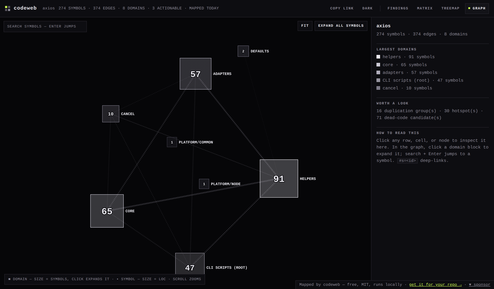

The living map of your codebase.
Know what exists, and what an edit breaks — before you write. codeweb serves one deterministic graph two ways — an interactive map for you, and 27 tools for the agents editing alongside you.
Built for the humans and the agents editing the code
codeweb computes one structural graph and serves it two ways — so a person and the AI agent working beside them finally share the same map.
An interactive map
One self-contained HTML report — the dependency web, duplication, hotspots, and ranked, cycle-safe consolidation. No CDN, no network, opens straight from disk.
27 deterministic tools
Over MCP, an agent asks what already does this, what an edit breaks, and which fix is safe — before it writes a line. No LLM in the analysis loop, so answers don't drift.
A four-stage deterministic pipeline
Parse-free extraction on the fast path for JavaScript, TypeScript, Python, Rust, Go, Java, C#, Ruby, PHP, Kotlin, and Swift, with an agent fallback for everything else.
extract
Parse-free atomic nodes + edges, per language.
cluster
Group nodes into semantic domains by call gravity.
overlap
Body-confirm cross-domain duplication and rank it.
render
A self-contained interactive map + 27 agent tools.
Restructure your own code — or vet someone else's
Map your own codebase
See the real dependency web, find where logic is duplicated, and get an ordered, cycle-safe plan to consolidate it.
Review before you adopt
Clone a third-party repo read-only, fully map it, and get an adoption review before you commit to depending on it. codeweb never runs the target.
Every claim is backed by reproducible evidence
codeweb is pre-registered and tested against independent oracles. We publish the nulls too — because trustworthy tooling shows its work.
32 / 33
pre-registered checks pass. The study found and fixed two real engine bugs the 286-test suite missed.
0 disagreements
across ~490k comparisons of cycles, impact, and callers against independent reference implementations.
+0.31 recall · equal cost
frontier agents discovering callers vs grep — all 5 engine-frozen reps positive, on the budgeted responses agents actually receive (v0.9.0). Preliminary, and labelled as such.
Approachable at the surface, deep when you need it
New to the codebase? Open the map, follow the foundations-first reading order, and see the domains at a glance. Shipping at scale? Wire the CI gate, drive the 27 MCP tools from your agent, on graphs measured green at 16k+ symbols.
- Beginners — one command, one map, plain-language findings.
- Advanced — deterministic tools, fitness rules, sharded subgraphs, a PR gate.

The live report — a real map of axios (274 symbols, 8 domains). Open the interactive demo →
Make AI coding agents more efficient, effective, and capable
Fewer tokens and steps to find what matters; higher-quality edits because the agent can see structure before it acts. Validated the right way — free of reward hacking.
Want the changelog when capabilities land? Watch → Custom → Releases on GitHub — release notes are the only announce channel this tool has.